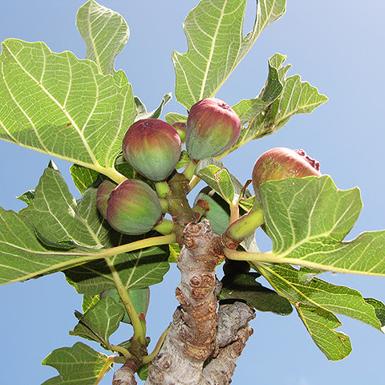

Ayuntamiento de Senés
JARDIN BOTANICO DE ESPECIES AUTOCTONAS DE SENES

Ficus carica

La higuera (Ficus carica) es un árbol caducifolio de porte medio, muy característico del paisaje mediterráneo, especialmente en zonas secas y soleadas. Es una de las especies más antiguamente cultivadas por el ser humano.
Presenta un tronco corto y retorcido, con corteza grisácea, y una copa amplia e irregular. Sus hojas son grandes, lobuladas y ásperas al tacto, fácilmente reconocibles. Produce como fruto el higo, una estructura carnosa muy apreciada por su sabor dulce.
Su rusticidad y capacidad de adaptación la convierten en una especie clave en el entorno rural mediterráneo.
La higuera es originaria de la región mediterránea y Asia occidental, donde se ha cultivado desde tiempos antiguos. Se adapta muy bien a suelos pobres, pedregosos y bien drenados.
En el entorno de Senés, es muy frecuente en huertos, márgenes de caminos y zonas rurales, formando parte del paisaje tradicional.
Su presencia está asociada a sistemas agrícolas de secano y al aprovechamiento de terrenos marginales.
El higo es un fruto rico en azúcares naturales, fibra y minerales, con propiedades energéticas y digestivas. Ha sido un alimento básico en la dieta tradicional mediterránea.
Se consume tanto en fresco como seco, siendo este último una forma tradicional de conservación.
Además, la higuera produce un látex que ha sido utilizado en medicina popular con distintos fines.
La higuera simboliza la abundancia y la fertilidad, al producir frutos en gran cantidad incluso en condiciones difíciles.
También representa la tradición agrícola y la conexión con la tierra.
En Senés, la higuera ha sido un cultivo fundamental en huertos familiares, proporcionando alimento durante generaciones.
Los higos se consumían frescos o secos, siendo estos últimos almacenados para el invierno. Se hacían numerosas recetas, como higos con almendras, mermelada de higos, higos secos con pan tierno. Las brevas, primera cosecha de la higuera, junto con los higos fescos son excepcionales como postre.
Se utilizaban para combatir el estreñimiento, son expectorantes y combaten otras enfermedades de la vía respiratoria..
La higuera produce frutos principalmente en verano, aunque algunas variedades pueden dar una segunda cosecha a finales de temporada.
El higo no es un fruto convencional, sino una estructura llamada sicono que contiene las flores en su interior.
Es una de las plantas cultivadas más antiguas de la humanidad.
Su capacidad para crecer en suelos pobres la hace esencial en paisajes mediterráneos.